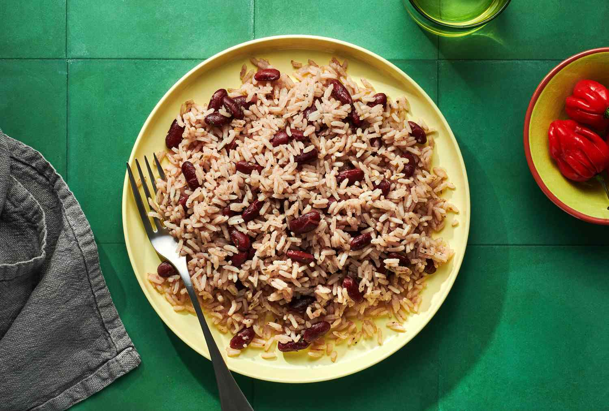

Rice and Peas

A staple dish in Jamaican cuisine
The most authentic Jamaican rice and peas recipe.
Rice, red kidney beans (peas), homemade coconut milk, and seasoned to perfection.
Quick and easy rice and peas use canned coconut milk and kidney peas!
Ingredients
- Red kidney beans
- Coconut milk
- Rice
- Scotch Bonnet
- Scallion
- Pimento
- Garlic
- Ginger
- Thyme
- Salt
-
Prep the beans:
If you are using canned beans, go to step three.
Wash the dry beans to remove dirt and leave to soak in clear water for at least two hours,
preferably overnight.
-
Pressure cook
I suggest pressure cooking the dry beans because it reduces the time it takes to cook the beans.
Add the pimento berries, ginger, garlic, salt and beans to the pressure cooker and pressure for 15 to 20 minutes to soften the beans.
If you don’t have a pressure cooker but still wish to use dry beans,
it will take 45 to 50 minutes before the beans cook."
-
Add flavour
Add the scallion, onion, thyme, scotch bonnet pepper, and coconut milk to the pot with the cooked beans.
If you are using canned beans, remember to also add the pimento berries (allspice), ginger, garlic and salt..
-
The Rice
Wash the rice to get rid of the starch. Add it to the pot, cover and bring to a boil. Turn the heat down to low and let it steam until all the water evaporates.
it will take 45 to 50 minutes before the beans cook.